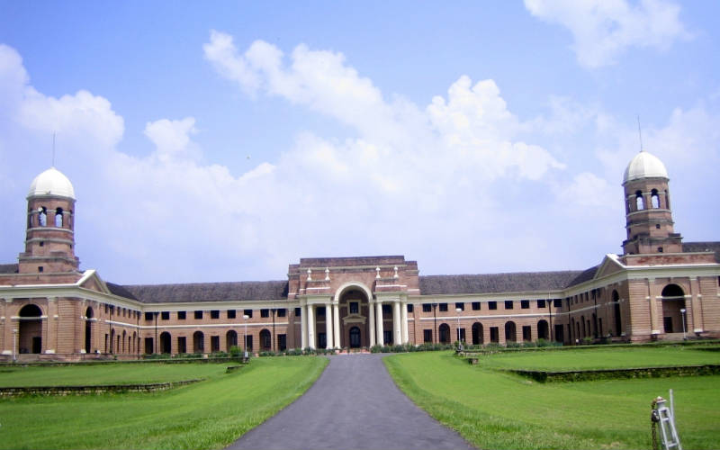
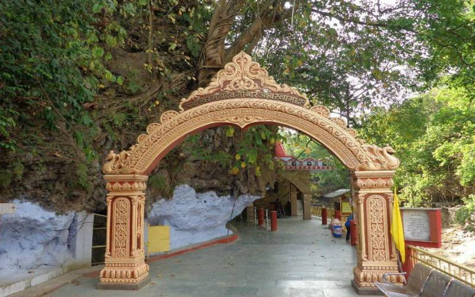

Mussoorie
Mussoorie, also known as Queen of the Hills, is among the most popular hill stations of the country. A Britisher, Captain Frederick Young, accompanied by an official named FJ Shore, had climbed up the hill from the Doon valley in 1827 and found this ridge offering great views and a salubrious climate. This visit laid the foundation for this grand hill station.
A captivating paradise for leisure travellers and honeymooners, it is a perfect summer resort. Located on a 15-km-long horseshoe ridge with the grand Himalayas as a backdrop, Mussoorie spreads across at a height of 2,000 m above sea level. From this vantage point, it offers scenic views of Himalayas peaks in Western Garhwal.
visit now
Budha Temple
Famous for extravagant Buddhist structure and holy school of Tibetan religion, Buddha Temple is the most visited place in Dehradun city. Located at Clement Town, Buddha Temple is center of attraction for many International tourists and Budhhist followers.
Built-in the later years of the 20th century by the revered Buddhist religious head Kochen Rinpoche, Buddha Temple in Dehradun is a magnificent Tibetan Monastery and is also known as Mindrolling Monastery. It was built not only to safeguard the religious and cultural sentiments of the Buddhists but also to promote the same. The Temple is essentially
a built-in Japanese architecture style on a highland in the Doon Valley.
Read More

F.R.I
Forest Research Institute (FRI), Dehra Dun made a humble beginning as Forest School established in 1878.
Initially named as Imperial Forest Research Institute, FRI came into being in 1906. Later renamed as Forest Research Institute and Colleges, with a number of centres located at different places all over the country administering research as well as training of
Forest Officers and Forest Rangers. After reorganization of Forestry Research in the country and creation of Indian Council of Forestry Research and Education (ICFRE) in 1988, the training and research centres were given an independent status of institutes. Forest Research Institute, now one of the institutes under ICFRE, was conferred the status of Deemed University in December 1991
on the recommendations of the UGC, Ministry of Human Resource Development, Government of India.
visit now

Tapkeshwar
The history of Tapkeshwar temple is related to Mahabharata period. Drops of water keep dripping from a rock on the Shivling. Know the importance and secret of this place.
There are many ancient temples of Bholenath. Whose history is related to Mahabharata and Ramayana. One such ancient temple of Lord Shiva is in Uttarakhand Devbhoomi. Whose history is related to the Mahabharata period, the temple has some special significance and mystery. Tapkeshwar Mahadev Temple is one of the most famous temples of Dehradun. According to mythological belief, Bhole Shankar had appeared here in the form of Deveshwar in the ancient times.
Drops of water keep dripping from a rock on the Shivling of this temple.
visit now

Lachhiwala
Lachhiwala now known as “Nature Park” is one of the popular picnic spots in Dehradun.
It has man-made water pools among the forest with a river flowing by.
One can hit this place during the summers to swim in the cool waters of the pool. This pool is filled by a stream of Suswa river.
This area is also known for its lush greenery. Many nature lovers flock this place many fun activities such as swimming, trekking and bird watching. In fact, the vegetation at Lachhiwala is a mix of deciduous and Sal trees. Also, many nature lovers and solitude seekers come here to find peace and happiness.
Lachhiwala is now named as Nature Park.
visit now